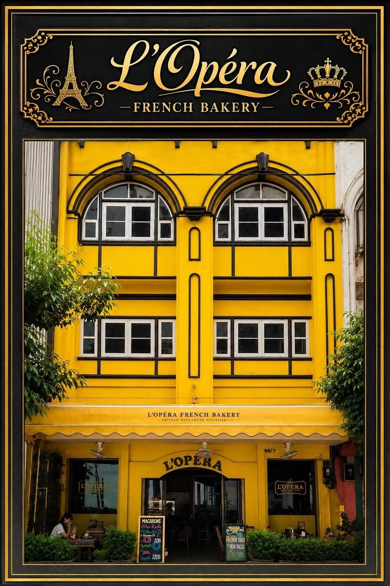
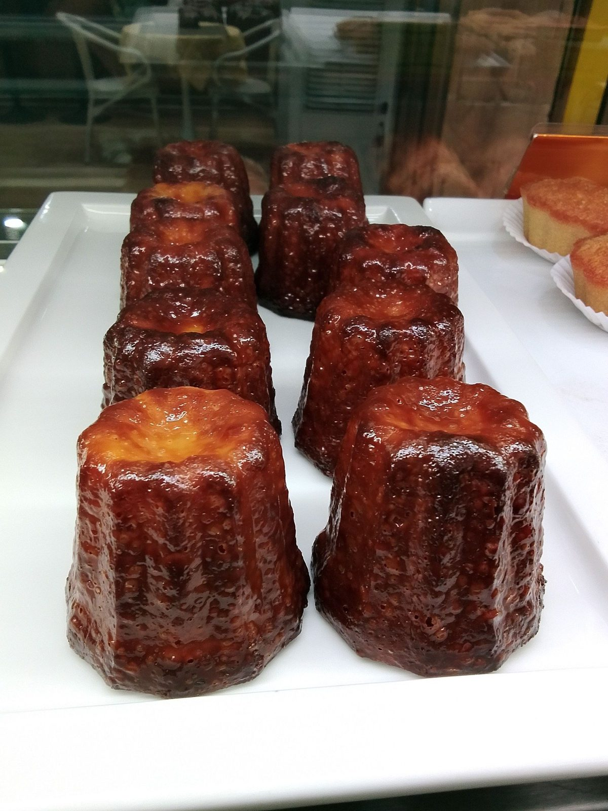
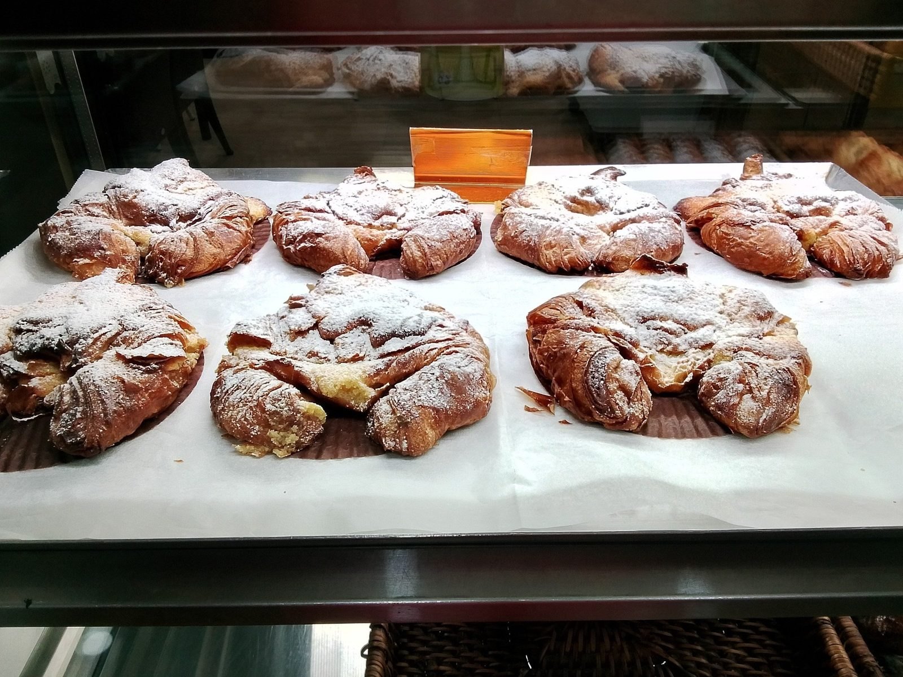

L'Opéra French Bakery
เกี่ยวกับเรา · โลเปร่า เฟรนช์ เบเกอรี่
Our story · เรื่องราวของเรา
L'Opéra is a French bakery in the heart of Chiang Mai, run with a baker's love for proper bread. Look for the bright yellow building on Sridonchai Road with the L'Opéra sign.
Expats, travellers and local cafés alike come to us for their bread: one review notes that even Happy Frog gets its bread from L'Opéra.


L'Opéra French Bakery
แวะมาหาเราได้เลย · โลเปร่า เฟรนช์ เบเกอรี่